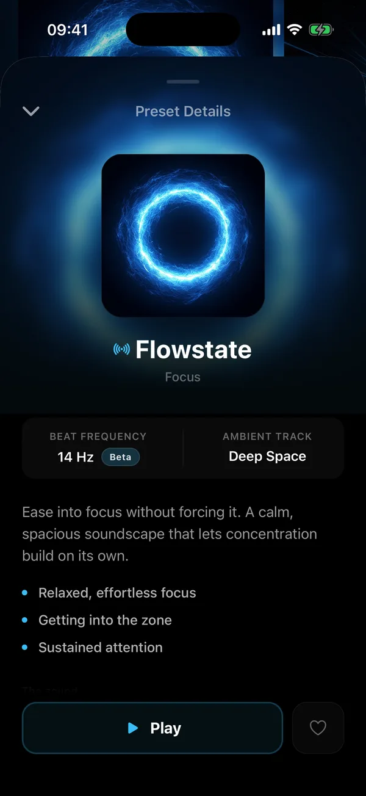
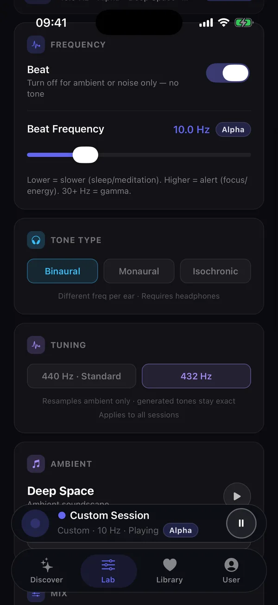

A visual that breathes with the sound.
Every soundscape comes with its own visualizer, shaped to the mood of the sound. Leave it glowing on the nightstand, or let it fill the desk while you work.
An iPhone app that layers binaural beats over handcrafted ambient music — for deep focus, easier sleep and calmer evenings.
Free to try · No account needed
Listen
Put on headphones and pick a mode. The beat is generated live, right here in your browser — the same way Attune builds it on your iPhone.
Turn the beat off and on to hear what it adds. In the app every soundscape has its own frequency, and you can dial in your own.
The library
50+ soundscapes across focus, relax, meditation and sleep. Original ambient music, nature and spatial tracks — each paired with its own frequency.
Inside the app


Every soundscape comes with its own visualizer, shaped to the mood of the sound. Leave it glowing on the nightstand, or let it fill the desk while you work.
Each soundscape shows its frequency, its band and what it's built for — so you can choose by how you want to feel, not by guessing.
Dial in any beat frequency, switch between binaural, monaural and isochronic tones, pick the soundscape underneath — and tune the music to 432 Hz if that's how you like it.
Overlay mode lays the beat underneath Spotify, Apple Music or a podcast. Your playlist, your frequency.
Why Attune
Free binaural tracks are everywhere. Here's what changes when the beat is made for you, on your phone, every time you press play.
The beat is generated on your device at the precise frequency on the label — not baked into a compressed upload.
Overlay mode plays the beat under your own playlists and podcasts, so you never have to choose.
Nothing cuts in halfway through a session, and nothing jolts you awake right as you drift off.
Retune the music to 432 Hz with one tap. The beat stays exact either way.
Selected soundscapes are mixed in immersive 8D audio that moves around you in headphones.
A set of free soundscapes from day one. No account, no sign-up — just open it and press play.
Science
Binaural beats have been studied for decades. A few of the findings behind Attune's modes:
Beta-frequency beats were linked to better performance on a sustained-attention task, and a better mood, than lower frequencies.
Lane et al., Physiology & Behavior, 1998Listening to a 3 Hz beat while sleeping helped people reach deep sleep sooner — and stay in it longer.
Jirakittayakorn & Wongsawat, Frontiers in Human Neuroscience, 2018A 2024 review highlights research in which 40 Hz beats improved cognitive performance more than the other frequencies tested.
Askarpour et al., The Open Public Health Journal, 2024Patients who listened to binaural-beat audio before surgery reported a larger drop in anxiety than those who heard audio without the beat.
Padmanabhan et al., Anaesthesia, 2005Attune is a wellness app, not a medical device. Everyone responds differently.
Download Attune and start with a free soundscape. No account needed.
Download on the App Store